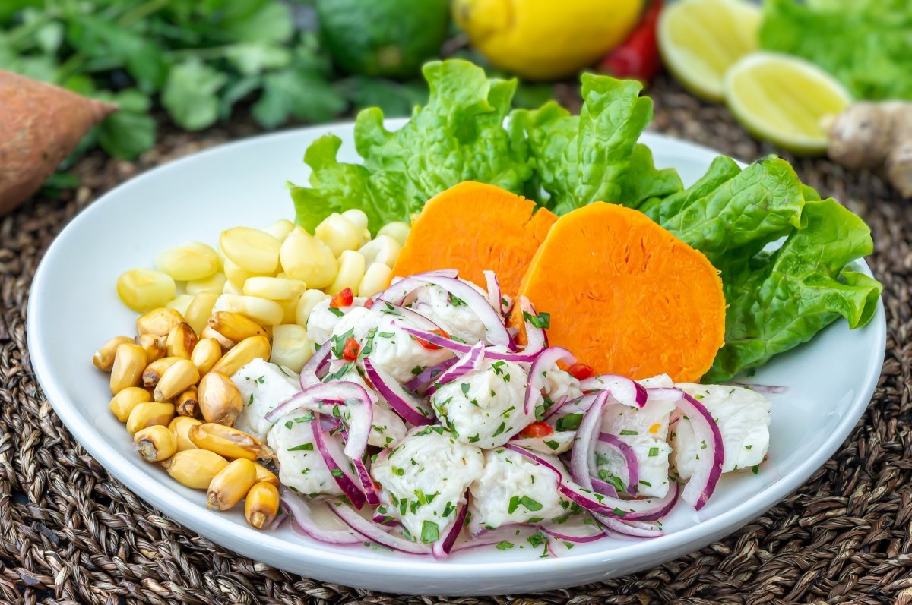

Ceviche

Descripción
El Ceviche de pescado peruano es el plato tradicional por excelencia en el Perú. Los peruanos lo consideramos nuestro plato bandera y nos sentimos especialmente orgullosos de él. ¡Y aquí tienes nuestra receta!
Ingredientes
- 200 gramos de pescado
- 1 cucharadita de culantro picado
- 1 cucharadita de ají limo rojo picado
- 1 cda de sal
- 4 limones
- 1/2 cebolla roja
- 1 cucharada de apio picado
- 1 bocona de leche de tigre
- 1 cucharada de pasta de ajo
Pasos
- Vamos a empezar con la preparación de la leche de tigre. De esta manera la tendremos fresca y lista para incorporar a la preparación.
- Corta unos cuantos trozos de pescado y añádelos a la licuadora.
- Ahora coloca un poco de sal, el jugo de un limón, la pasta de ajo, un chorrito de agua fría, tapa y licúa.
- A continuación agrega una rama de culantro, tapa de nuevo y vuelve a licuar todo. Reserva en la refrigeradora para mantenerlo frío.
- Hora de cortar el pescado. Corta en cubos de 3-4 centímetros.
- Ahora la cebolla en corte pluma.
- Pica el apio en brunoise.
- Picamos uno de los ají limo.
- Momento de la preparación. En un bowl coloca el pescado en trozos, el culantro picado y el ají limo. Añade un par de cubos de hielo para mantener la frescura de la preparación y mueve un poco.
- Ahora, añade la preparación 3/4 partes de leche de tigre al bowl y remueve suavemente para que no maltratar al pescado.
- Agrega la cebolla previamente cortada y mueve un poco y listo. Ya casi está.
- Vamos a emplatar. Coloca en un plato hondo, si es posible, unas cuantas hojas de lechuga, al costado el camote cortado en trozos y encima añade la preparación del ceviche.
- Ahora bañamos con la leche de tigre que nos quedó restante.
- Unos granos de choclo cocido a un lado.
- Un poco de canchita Chulpi. Ya se me hace la boca agua.
- Por último una rodajita de ají limo para decorar y ya tienes un rico Ceviche peruano de pescado. ¡A comer!
Home